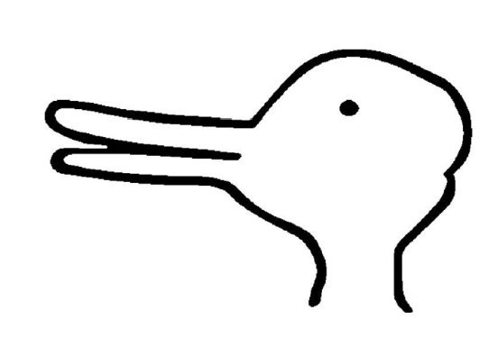

The concepts we have determine what we see.
Concepts are the building blocks of maps. They function like the symbols cartographers use on actual, physical, maps: triangles for mountains, blue lines for rivers, dots for cities. They are not the territory itself, but simplified markers that let us represent and navigate it.
Similarly, concepts compress sensory reality into usable abstractions. You do not register every leaf, branch, and contour each time you see a tree. You just see "tree."

Consider the rabbit-duck illusion: the image never changes, even as you flip between seeing a rabbit and seeing a duck. The only thing that changes is your interpretation i.e. which concept you're applying to it. Same when you gaze at clouds and "see shapes." The seeing of a particular shape is a consequence of applying that concept.
Thus concepts do not merely label what we see after the fact. They help determine what, in a meaningful sense, we see in the first place.
Which is why engineered concepts are so powerful. Introduce a new concept, and you don't just give people a new word: you give them a new way to sort experience, one that may already contain an implied judgment.